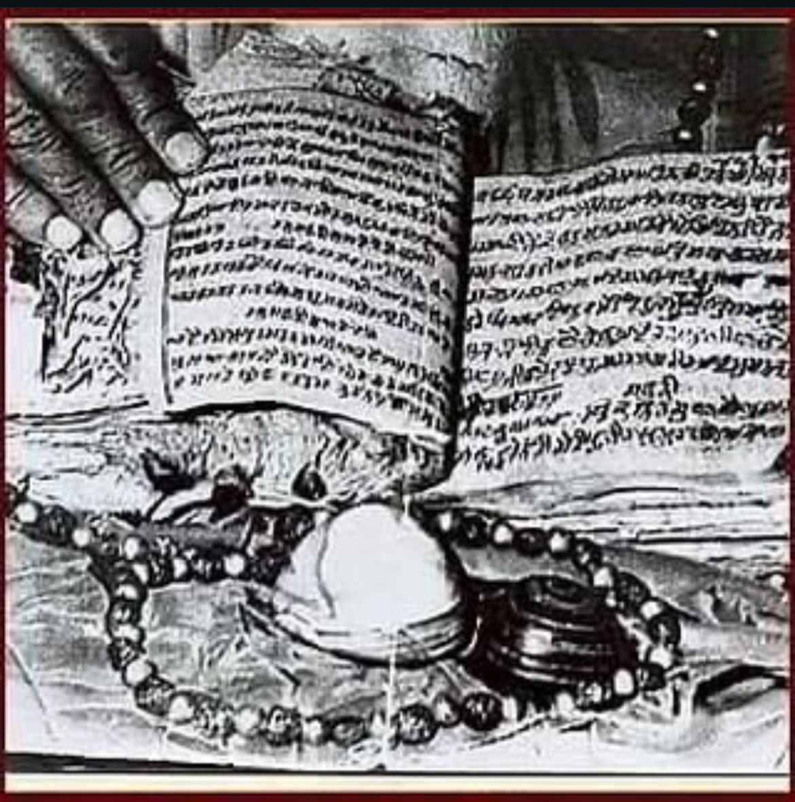

The holy Pothi Mala, written by Guru Nanak Dev Ji, consists of the Baani of four Sikh Gurus. Shri Gurudwara Pothimala Sahib, Faridabad, was built by Baba Jaswant Singh Sodhi Ji, the 14th direct descendant of Guru Ram Das Ji.
Learn More →
The Pothi Mala preserves the words of Guru Nanak Dev Ji and subsequent Gurus.
Built by Baba Jaswant Singh Sodhi Ji, it stands as a symbol of devotion and heritage.
The Sodhi family continues to preserve this divine heritage for future generations.